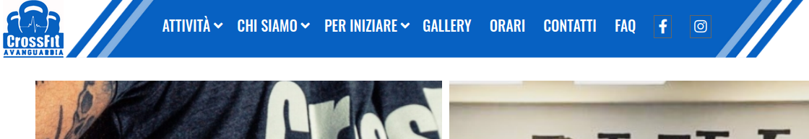

Siti web dinamici - Realizzazione di un Sito Web Aziendale con WordPress e PHP
Il mio percorso nel mondo dello sviluppo web ha abbracciato diverse tecnologie, tra cui WordPress e PHP, dimostrando la mia capacità di utilizzare queste piattaforme per creare soluzioni concrete. Uno dei progetti chiave in cui ho applicato queste competenze è stato il rifacimento di un sito web aziendale, un'esperienza che ha mostrato la mia capacità di collaborazione e l'applicazione pratica delle competenze acquisite.
Sito Web Aziendale "Palestra" su WordPress

Come parte del corso "Progettista di Applicazioni Web", ho avuto l'opportunità di collaborare con altri quattro partecipanti per creare un sito web aziendale per una palestra. Questo progetto, assegnato come compito conclusivo, ci ha permesso di mettere in pratica le conoscenze acquisite durante il corso e dimostrare le nostre abilità di sviluppo.
Implementazione di Diverse Fasi del Progetto
Abbiamo seguito un approccio completo nell'affrontare il progetto del sito web aziendale:
-
Intervista.
Abbiamo interagito con il cliente per comprendere le sue esigenze, obiettivi e aspettative. Questo passo è stato cruciale per delineare le direzioni del progetto.
-
UCD e UX Design.
Abbiamo applicato principi di User-Centered Design e User Experience per creare un'esperienza utente coinvolgente e intuitiva.
-
Grafica.
Abbiamo curato l'aspetto visivo del sito, assicurandoci che rispecchiasse l'identità aziendale e catturasse l'attenzione dei visitatori.
-
Personalizzazione PHP e JavaScript.
Abbiamo utilizzato le nostre competenze in PHP e JavaScript per personalizzare il sito secondo le specifiche del cliente, garantendo funzionalità aggiuntive e una migliore interattività.
Risultati Soddisfacenti e Feedback Positivo
Alla presentazione del lavoro, il cliente ha espresso apprezzamento per il nostro impegno e la qualità del lavoro svolto. Questo feedback positivo è stato una conferma del nostro approccio completo e delle competenze applicate. L'obiettivo di rifacimento del sito web per la palestra milanese è stato raggiunto con successo, e l'aspettativa è quella di completare e pubblicare il sito per il beneficio del cliente.
Conclusioni
Il mio coinvolgimento nella creazione del sito web aziendale con WordPress e PHP ha dimostrato la mia capacità di applicare le competenze acquisite in situazioni reali. L'esperienza di collaborazione, l'applicazione pratica delle fasi di progetto e il feedback positivo del cliente hanno sottolineato la mia dedizione nell'ottenere risultati tangibili e soddisfacenti. Sono entusiasta di portare queste competenze e l'approccio completo a nuovi progetti futuri.
Precedente: LaTEX - Rifacimento della Tesi di Laurea
Successivo: Siti web dinamici - Sito Web Personale e Sito Web per il Condominio con Wordpress e PHP